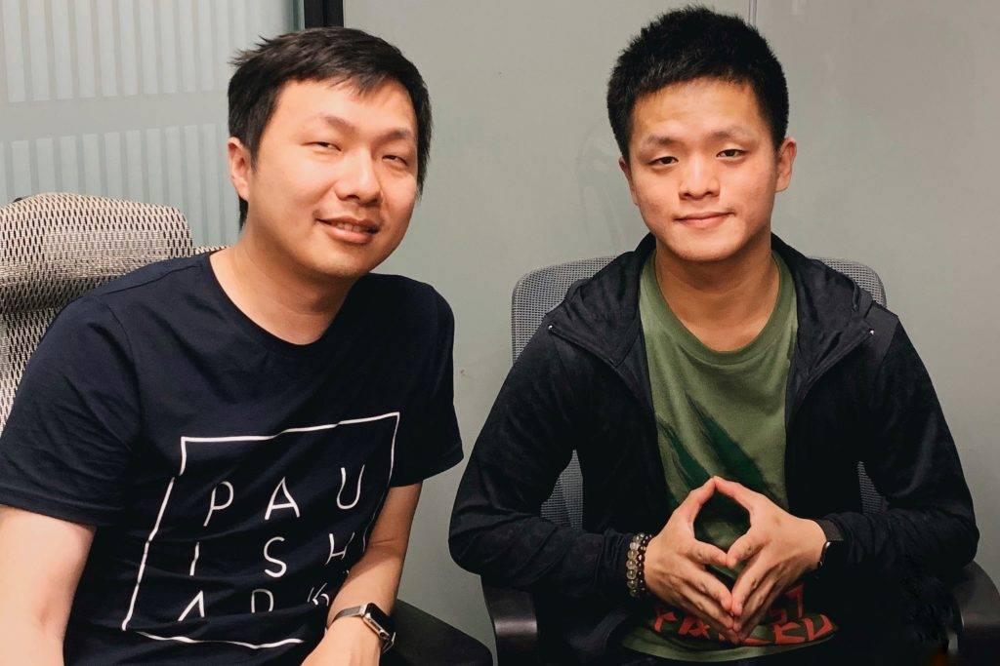

"sky release" is a social adventure game developed by game producer Chen Xinghan and his team.
That game comeplay,and operated by the domestic NetEase game agent.
The game was released on the App Store on June 21,2019,on the Android paltform on july9,2020 and on the Switch in June 2021.
Chen Xinghan was born in Shanghai, graduated from Shanghai Jiaotong University with a bachelor's degree,
and then went to the University of Southern California School of Film and Television to obtain a master's degree in interactive media.
Chen Xinghan worked for Maxis and developed "Spore" with Will Wright, and is currently the creative director of Thatgamecompany.

At the 13th International Game Developers Conference held in San Francisco, USA, Chinese designer Chen Xinghan won 6 of the 11 awards with "Journey (Wind Journey)".
The International Game Developers Conference is the largest professional annual event for game developers in the world.
At the awards ceremony on the evening of March 27, Chen Xinghan's 2012 "Journey (Wind Journey)" not only won the best game of the year, but also won innovation awards, best sound effects, best game design, best visual art and 6 awards including Best Download Game.
The game also won the 66th Game 5 Awards of the British Academy of Film and Television Arts in March this year.
map
sky